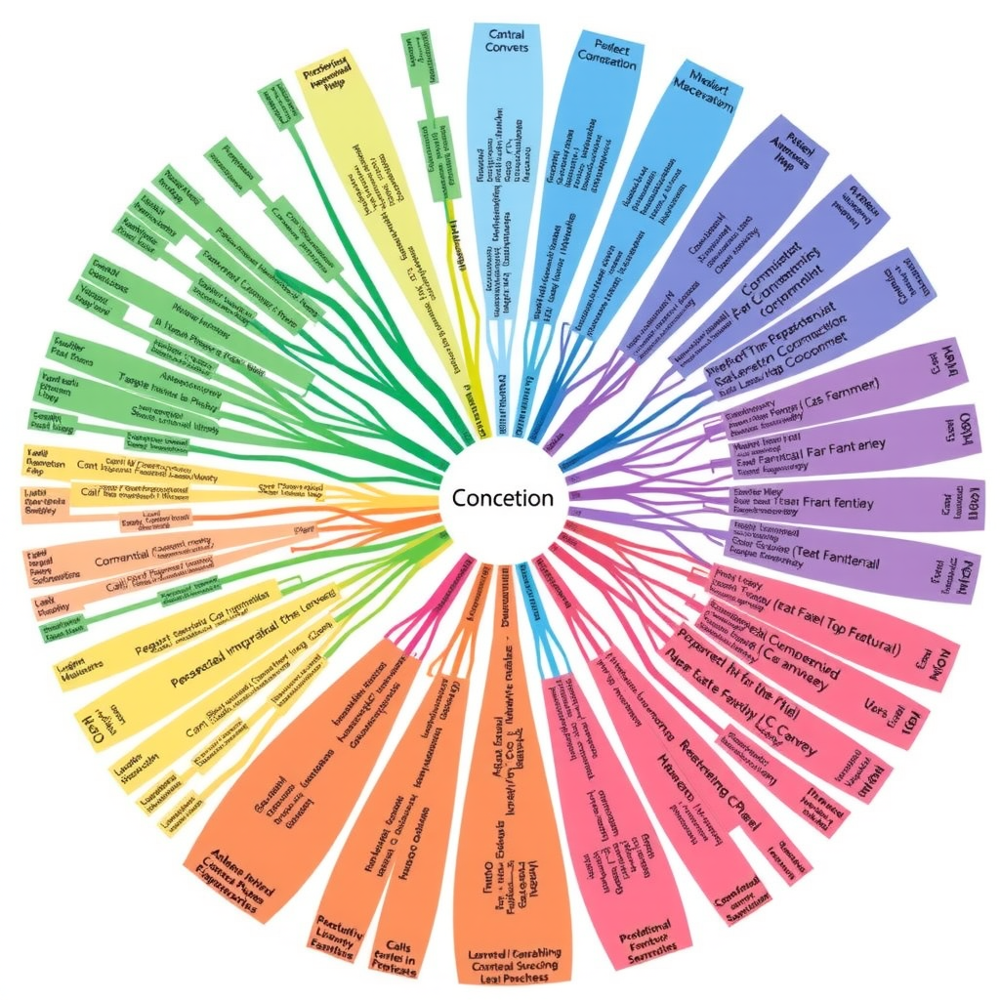
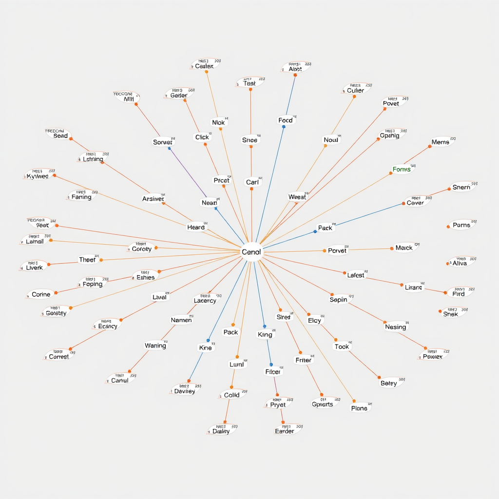
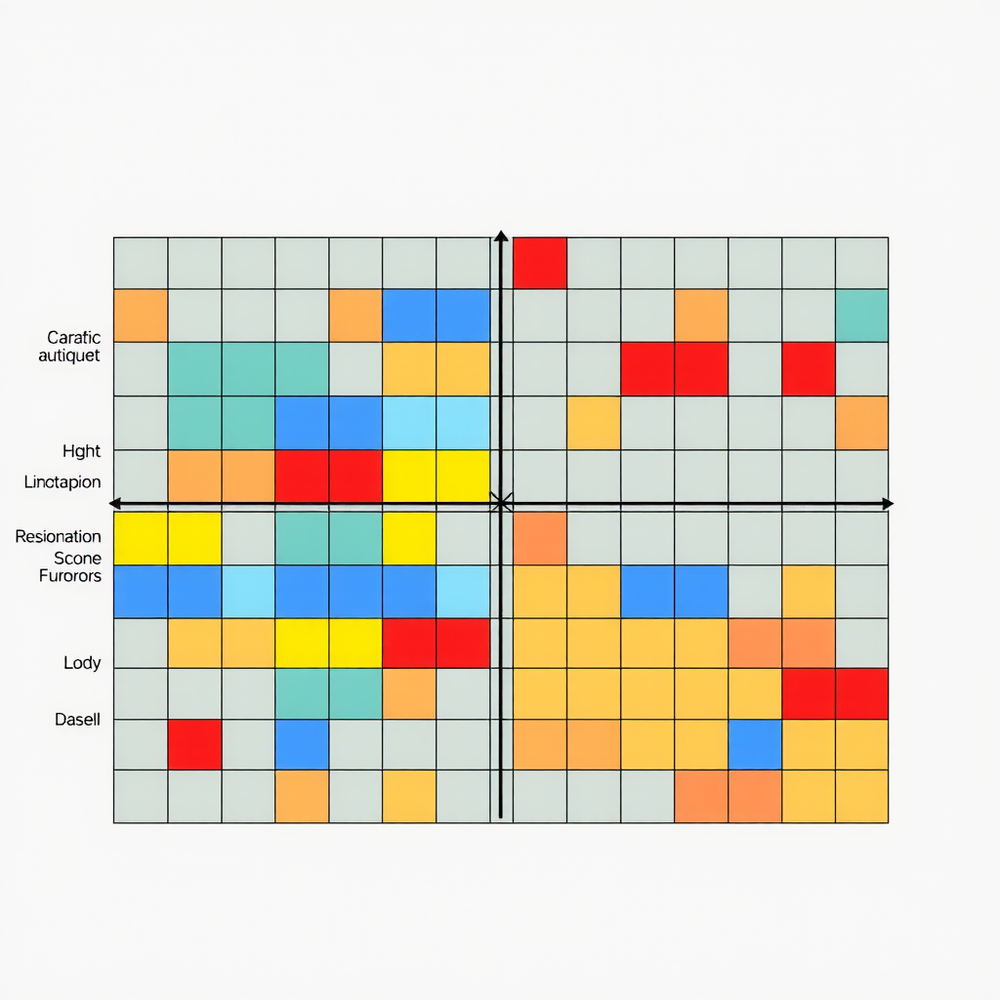
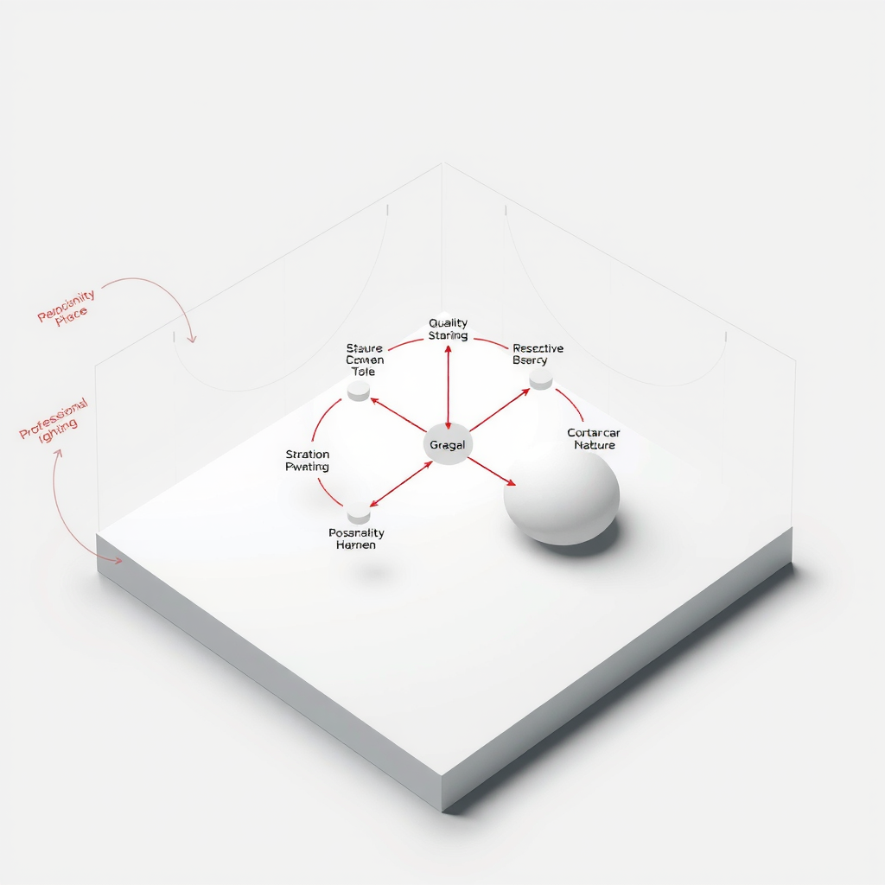

Mapping Your Thought Landscape: Visual Tools for Understanding Mental Processes
Our thoughts are invisible, fleeting, and often chaotic. Yet within this apparent disorder lies intricate structure—patterns of cognition that shape how we understand the world, solve problems, and create meaning. Visual mapping tools offer a revolutionary approach to making these invisible mental processes tangible, transforming abstract thinking into concrete representations that we can examine, refine, and optimize.
The practice of externalizing thought isn't new—humans have been drawing diagrams, sketches, and maps for millennia. What's changed is our understanding of how these visual representations interact with cognitive processes, and the sophisticated digital tools now available to enhance this ancient practice. By mapping our thought landscape, we gain unprecedented insight into our own mental architecture.
The Science of Visual Thinking
Research in cognitive psychology reveals that our brains process visual information 60,000 times faster than text. When we translate abstract concepts into visual formats, we engage multiple cognitive systems simultaneously—spatial reasoning, pattern recognition, and semantic memory all work in concert. This multi-modal engagement creates stronger neural pathways and more robust understanding.
"The act of drawing a concept map doesn't just represent thinking—it fundamentally changes how we think. Externalization transforms working memory limitations into spatial advantages."
Visual mapping leverages what cognitive scientists call "distributed cognition"—the idea that thinking doesn't happen solely inside our heads but extends into our environment. When we create external representations of our thoughts, we offload cognitive burden, freeing mental resources for higher-order processing like analysis, synthesis, and creative connection-making.
Mind Mapping: The Gateway Technique
Mind mapping, popularized by Tony Buzan in the 1970s, remains one of the most accessible and powerful visualization techniques. Starting from a central concept, ideas radiate outward in branches that mirror the associative nature of human memory. This radial structure aligns with how our brains naturally organize information—not in linear lists, but in interconnected networks.
The beauty of mind mapping lies in its flexibility. Use it for brainstorming, where the goal is divergent thinking and idea generation. Apply it to note-taking, transforming linear lecture content into memorable visual structures. Deploy it for project planning, where hierarchical relationships between tasks become immediately apparent. The same technique adapts to countless cognitive tasks.
Key Principles for Effective Mind Maps
Start with a Powerful Central Image
Your central concept should be visually striking and emotionally resonant. The brain remembers images better than words, so invest time in creating or selecting a central image that captures the essence of your topic. This becomes the anchor point for all subsequent associations.
Use Color Strategically
Color isn't decoration—it's information architecture. Assign different colors to major branches to create visual categories. This color-coding helps your brain quickly navigate the map and strengthens memory encoding. Warm colors (reds, oranges) naturally draw attention to priority items, while cool colors (blues, greens) recede, perfect for supporting details.
Keep Text Minimal
Use single keywords or short phrases rather than sentences. This constraint forces you to identify the essential concept, stripping away verbal padding. The resulting map is more scannable and forces your brain to reconstruct meaning, which strengthens understanding and retention.
Embrace Organic Growth
Don't worry about creating a perfect structure from the start. Let your mind map evolve naturally as new connections emerge. This organic development mirrors how understanding actually develops—through exploration, discovery, and gradual refinement rather than predetermined structure.
Concept Mapping: Building Knowledge Networks
While mind maps radiate from a single center, concept maps create networks of interconnected ideas without hierarchical constraints. Developed by Joseph Novak in the 1970s, concept maps excel at representing complex relationships between multiple concepts. They're particularly powerful for understanding systems, exploring cause-and-effect relationships, and identifying gaps in knowledge.
The key distinction in concept mapping is the labeled connections. Rather than simply drawing lines between ideas, you explicitly name the relationship: "causes," "requires," "contradicts," "exemplifies." This labeling forces precise thinking about how concepts relate, revealing the logical structure of your understanding and exposing fuzzy thinking or misconceptions.
Concept maps are invaluable for learning complex subjects. As you build your map, you're forced to articulate relationships explicitly, which deepens comprehension. The visual structure also makes it easy to spot missing connections or contradictions in your understanding. When you can't draw a clear connection between two concepts that should be related, you've identified a gap in your knowledge that needs attention.
Flow Diagrams: Mapping Process and Sequence
When your thinking involves sequences, decisions, or processes, flow diagrams become essential tools. These linear or branching structures map the temporal dimension of thought—how one step leads to another, where decisions create divergent paths, and how processes unfold over time.
Flow diagrams excel at revealing the logic of procedures and algorithms. By mapping out each step and decision point, you can identify inefficiencies, redundancies, or missing steps. This makes them invaluable for process improvement, troubleshooting, and planning. The visual representation makes it easy to see the entire process at a glance, something impossible with written procedures.
Common Flow Diagram Applications
- Decision trees for complex choices with multiple variables and outcomes
- Workflow diagrams for business processes and project management
- Algorithm visualization for programming and computational thinking
- Troubleshooting guides that systematically narrow down problems
- User journey maps showing how people interact with systems over time
Matrix Diagrams: Comparing and Contrasting
Matrix diagrams organize information along two dimensions simultaneously, creating a grid that reveals patterns and relationships. This two-dimensional structure is perfect for comparison tasks, priority setting, and analyzing how multiple variables interact. The classic 2x2 matrix (like the Eisenhower Box for time management) demonstrates the power of this approach—complex decisions become clear when mapped onto intersecting axes.
The strength of matrix thinking lies in forcing explicit comparison. When you place items in a matrix, you must evaluate each one against both dimensions, leading to more nuanced understanding than simple lists. This structured comparison often reveals surprising patterns—items you thought were similar end up in different quadrants, or unexpected clusters emerge.
Beyond simple 2x2 grids, matrix diagrams can become more sophisticated. Multi-dimensional matrices use color, size, or symbols to represent additional variables. Relationship matrices show how items in one list connect to items in another. The key is choosing dimensions that meaningfully divide your problem space, creating categories that illuminate rather than obscure.
Timeline Visualization: Understanding Temporal Patterns
Time is a fundamental dimension of human experience, yet we often struggle to visualize temporal patterns. Timeline diagrams make time visible, revealing rhythms, cycles, and causal sequences that remain hidden in narrative descriptions. Whether planning a project, analyzing historical events, or tracking personal habits, timeline visualization transforms temporal data into spatial patterns our brains can grasp intuitively.
The power of timeline thinking extends beyond simple chronology. Parallel timelines reveal how different streams of activity interact over time. Gantt charts show task dependencies and critical paths in project management. Personal timeline mapping can uncover patterns in your own life—recurring cycles of productivity and rest, the long-term impact of decisions, or the gradual accumulation of skills and knowledge.
Advanced Timeline Techniques
Layered Timelines:Stack multiple timelines to show how different aspects of a situation evolve in parallel. This reveals synchronicities and causal relationships across domains.
Variable-Scale Timelines:Use logarithmic or variable scaling to show both long-term trends and short-term details in the same visualization.
Circular Timelines:Represent cyclical processes (seasons, habits, recurring events) as circles rather than lines, making patterns of repetition immediately visible.
Spatial Metaphors: Leveraging Physical Intuition
Our brains evolved to navigate physical space, and we can leverage this spatial intelligence for abstract thinking. Spatial metaphors—positioning concepts based on similarity, importance, or other relationships—tap into deep cognitive abilities. When you place related ideas close together and distant ideas far apart, you're using spatial proximity as a thinking tool.
Perceptual maps in marketing position brands in two-dimensional space based on consumer perceptions. Semantic spaces in linguistics represent word meanings as points in high-dimensional space, with similar meanings clustering together. Even simple sketches that position ideas spatially can reveal relationships that remain hidden in text.
The key to effective spatial metaphors is choosing meaningful dimensions. What does vertical position represent—importance, abstraction, time? What about horizontal position—similarity, sequence, category? When spatial dimensions map onto conceptual dimensions in intuitive ways, the resulting visualization becomes a powerful thinking tool that feels natural to navigate and understand.
Digital Tools: Amplifying Visual Thinking
While pen and paper remain powerful tools for visual thinking, digital platforms offer capabilities that extend beyond physical media. Infinite canvas applications let you zoom from high-level overview to detailed subsections seamlessly. Linking tools create hypertext-like connections between distant parts of your map. Collaborative features enable group thinking at scale. Animation can show how understanding evolves over time.
Choosing the Right Digital Tool
For Quick Brainstorming:Simple, fast tools with minimal friction. The goal is capturing ideas quickly without getting bogged down in formatting.
For Complex Knowledge Management:Robust platforms with powerful linking, search, and organization features. These become external memory systems.
For Collaborative Thinking:Real-time collaboration features, commenting, and version control. Multiple minds working on the same visual space.
For Presentation:Polish and export capabilities. Transform working maps into presentation-ready visualizations.
However, don't let tool selection become procrastination. The best tool is the one you'll actually use. Start with whatever's available—even basic drawing software or presentation tools can support visual thinking. As your practice develops, you'll naturally discover what features matter most for your thinking style and can choose tools accordingly.
Developing Your Visual Thinking Practice
Like any cognitive skill, visual thinking improves with deliberate practice. Start by choosing one visualization technique and using it consistently for a week. Mind mapping is often the easiest entry point—use it for meeting notes, planning your day, or exploring a topic you're learning. The goal isn't creating beautiful diagrams but developing the habit of thinking visually.
As you practice, pay attention to what works for different types of thinking. You'll discover that certain visualization techniques feel natural for certain tasks. Complex systems might call for concept maps, while planning benefits from timelines or flow diagrams. This meta-awareness—knowing which tool fits which task—is itself a valuable cognitive skill.
Don't worry about artistic skill. Visual thinking isn't about creating beautiful images—it's about using visual structure to enhance cognition. Stick figures, simple shapes, and basic diagrams work perfectly well. In fact, overly polished visualizations can sometimes obscure thinking rather than clarify it. The goal is functional clarity, not aesthetic perfection.
Weekly Practice Progression
Week 1:Mind map everything—meeting notes, daily plans, reading summaries. Focus on speed and capturing ideas, not perfection.
Week 2:Add concept mapping for complex topics. Practice labeling relationships explicitly. Notice how this changes your understanding.
Week 3:Experiment with flow diagrams and timelines. Map processes, decisions, and temporal sequences. Discover which situations call for sequential thinking.
Week 4:Mix and match techniques. Use multiple visualization types for the same problem. Notice how different representations reveal different insights.
Beyond Individual Thinking: Collaborative Visualization
Visual thinking becomes even more powerful when practiced collaboratively. When a team creates a shared visual representation, they're not just documenting their thinking—they're creating a common cognitive space where individual perspectives merge into collective understanding. This shared external representation becomes a thinking tool for the entire group.
Collaborative mapping sessions work best with clear facilitation. One person guides the process while others contribute ideas. The facilitator's role is to capture contributions faithfully, ask clarifying questions, and help the group see emerging patterns. The resulting map becomes a shared artifact that the team can reference, refine, and build upon over time.
The benefits extend beyond the immediate session. Shared visual representations create common language and understanding that persist. When team members can point to a shared map and say "remember that connection we drew between X and Y," they're leveraging the map as a communication tool. This shared reference point reduces misunderstanding and accelerates future discussions.
The Neuroscience of Visual Thinking
Recent neuroscience research illuminates why visual thinking is so effective. When we create visual representations, we engage the brain's visual processing systems—which evolved over millions of years and occupy significant neural real estate. These systems excel at pattern recognition, spatial relationships, and parallel processing of multiple elements simultaneously.
Visual thinking also leverages the brain's remarkable spatial memory. We can remember the location of objects in space with extraordinary precision—think of how easily you navigate your home in the dark. When we encode information spatially through visualization, we tap into this powerful memory system. This is why you can often remember where something appeared on a page even if you can't recall the exact content.
"Visual thinking isn't just a learning strategy—it's a fundamental mode of cognition that engages multiple brain systems simultaneously, creating richer, more durable understanding than verbal processing alone."
The act of creating visualizations also engages motor systems through drawing or typing, adding another layer of encoding. This multi-modal engagement—visual, spatial, motor, and semantic—creates multiple retrieval pathways in memory. Information encoded through multiple systems is more robust and easier to recall than information processed through a single modality.
Integrating Visual Thinking into Daily Life
The true power of visual thinking emerges when it becomes a natural part of your cognitive toolkit. This doesn't mean visualizing everything—some tasks are better suited to other modes of thinking. Rather, it means having visual thinking available as an option and knowing when to deploy it.
Start by identifying situations where you consistently struggle with verbal or linear thinking. Complex projects with many moving parts? Try a mind map or flow diagram. Difficult decision with multiple factors? Create a matrix. Learning a new subject with many interconnected concepts? Build a concept map. Let frustration with traditional approaches guide you toward visual alternatives.
Keep your visualizations accessible. Whether digital or physical, your maps should be easy to reference and update. They're not static artifacts but living documents that evolve with your understanding. Revisit them regularly, adding new connections, refining relationships, and pruning outdated elements. This iterative refinement mirrors how understanding actually develops—gradually, through repeated engagement and revision.
Making the Invisible Visible
Visual thinking tools transform the invisible landscape of thought into visible, manipulable structures. This externalization doesn't just represent thinking—it fundamentally changes how we think. By making our cognitive processes visible, we gain the ability to examine, critique, and improve them in ways impossible when thoughts remain purely internal.
The techniques explored here—mind mapping, concept mapping, flow diagrams, matrices, timelines, and spatial metaphors—represent just the beginning. As you develop your visual thinking practice, you'll discover hybrid approaches, invent new techniques, and develop a personal visual vocabulary that reflects your unique cognitive style.
The goal isn't to replace verbal thinking but to complement it—to have multiple cognitive tools available and the wisdom to choose the right tool for each task. In a world of increasing complexity, the ability to visualize and manipulate abstract concepts becomes not just useful but essential. By mapping your thought landscape, you gain not just better understanding but better thinking itself.